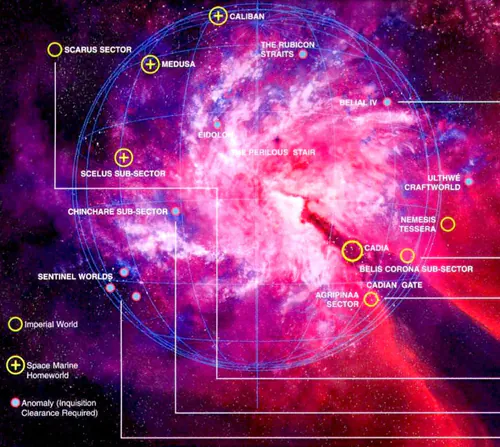
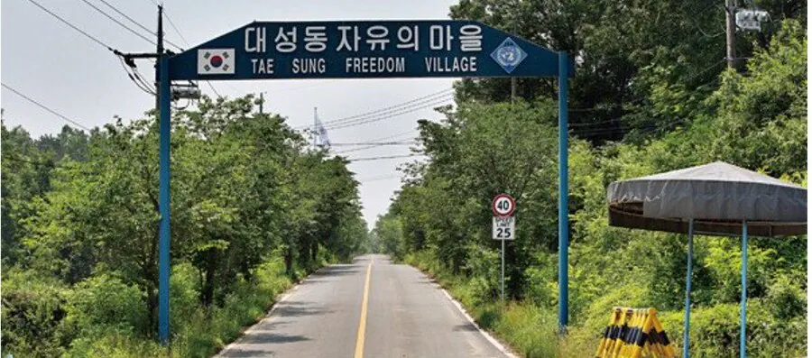
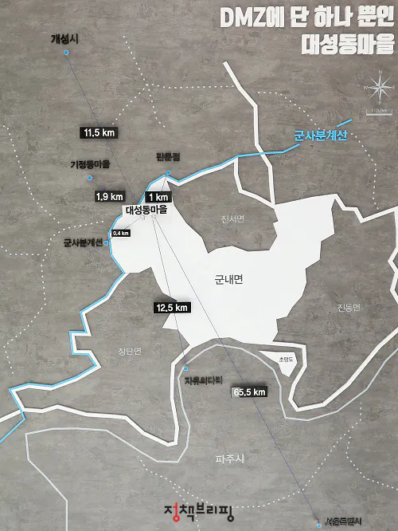
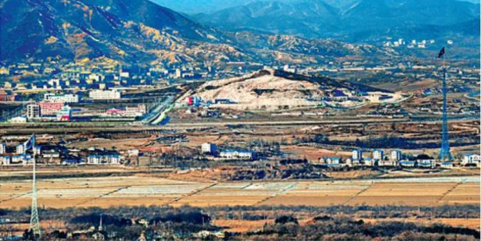
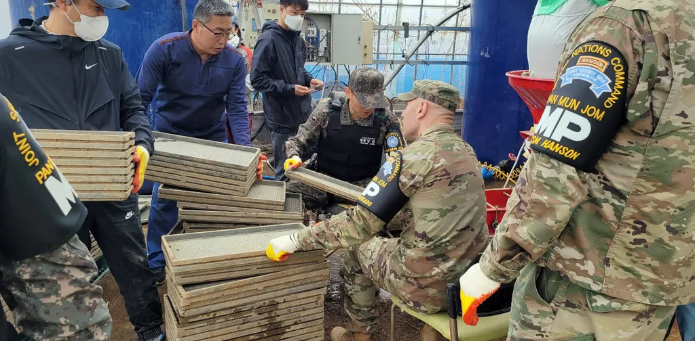
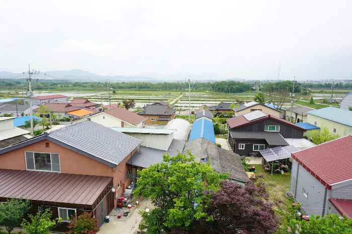
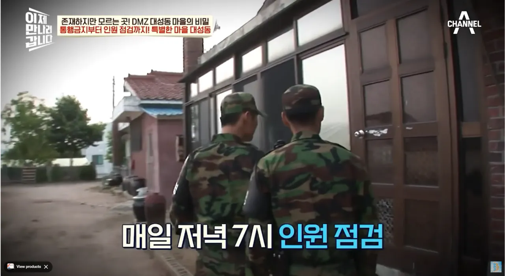
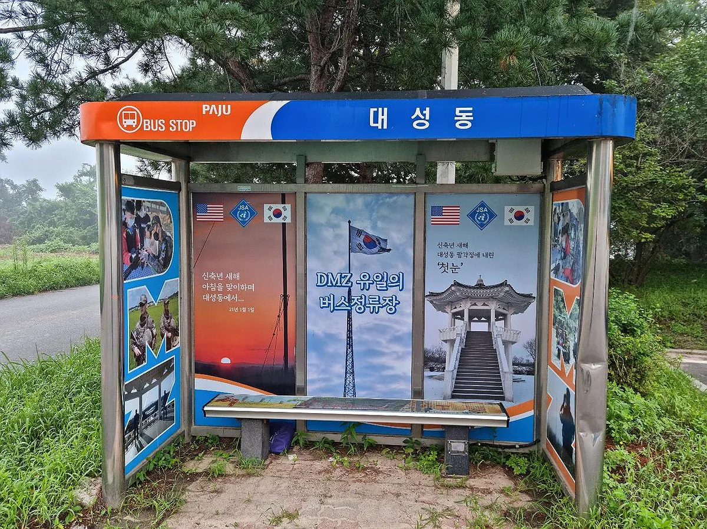
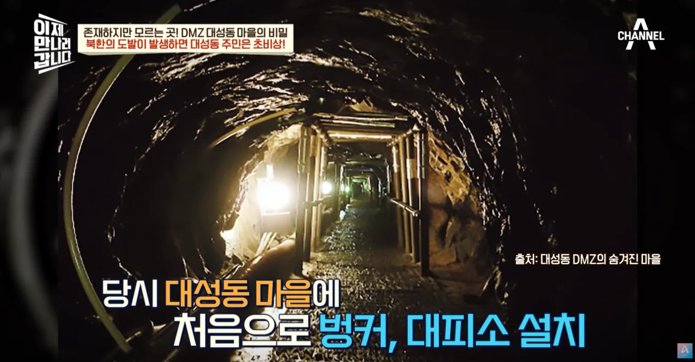
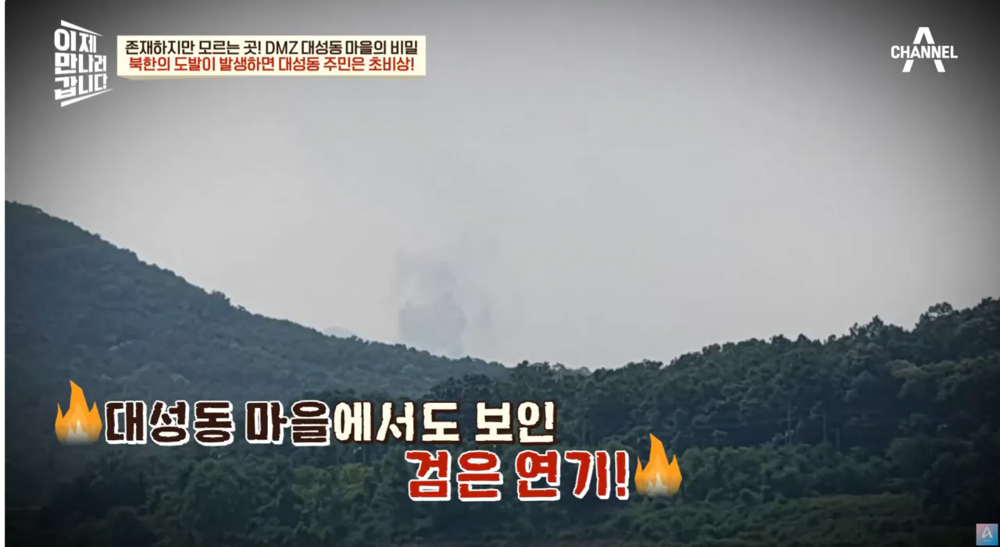

워해머 40,000에 나오는 인류제국의 요새행성(이었던) 카디아(Cadia Prime)
인류제국에서 수도 홀리 테라의 "북쪽"인 세그멘툼 옵스크루스에서 카오스 세력의 본거지인 아이 오브 테러를 바로 지나는 통로인 카디안 게이트에 위치하여
제국을 사수하는 주요 요충지로 인류제국에서 가장 살벌하게 방어되는 곳 중 하나이(었으)며 임페리얼 가드 중에서도 정예인 카디아 충격연대의 고향으로도 유명한 곳이다.
한국에 비슷한 곳이 있으니...

경기도 파주시 대성동

카디안 게이트 바로 앞에 위치한 카디아처럼 대성동 또한 군사분계선 400m 앞에 위치해 있다.

카디아와 마찬가지로 북쪽에 위치한 "아이 오브 테러"를 직접 눈으로 볼 수 있는 곳이다.
경찰 대신 군인이 주둔한다. 마찬가지로 납세의 의무가 면제되지만 남녀포함 거주민 70%가 현역인 카디아와 다르게 대성동은 병역의 의무도 면제된다.
(당연하지만 가서 산다고 면제되는건 아니고 한국전쟁 이전부터 산 사람들과 직계자손으로 한정된다.)

군정위원회에 통치되는 카디아처럼 대성동 또한 유엔군사령부의 관리를 받는다.

선전목적으로(일각에서는 북쪽을 감시하기 위해서라고 한다) 건물이 죄다 북향이다. 그래서 겨울에는 존나 춥다고 한다.
주민들의 집에 대한 소유권 자체가 없어서 인터넷 연결, 보수, 증축, 재건축, 리모델링을 하려고 하면 유엔군사령부 군사정전위원회의 허가를 받아야 한다.

밤12시부터 오전5시까지 통금이며 저녁 7시에 인원점검을 한다. 어기면 마을에서 추방될 수도 있다.
정전 협정 당시 거주했던 원주민들과 그 자손들만이 거주할 수 있으며, 여기에 해당한다 하더라도 1년 중 8개월 이상을 대성동에서 거주하지 않으면 주민권이 박탈된다.
DMZ쌀을 만드는 곳이기도 한데 주민들이 일할때도 군인들이 삼엄하게 감시한다.

버스 정거장은 단 한개이며 음식점, 이발소, 세탁소도 없어 이용하려면 마을 밖으로 나가야 되며 병원도 없어서 아프면 헬기가 태워준다.
직판장 하나 빼고는 마트와 편의점은 물론, 흔한 슈퍼마켓이나 구멍가게도 없다.
마을 1997년에는 논밭에서 일하던 모자가 카오스...아니 북괴군에게 납치된적도 있으며 (다행히 송환)

북쪽에서 도발할때마다 당연히 마을도 초비상인데 연평도 포격전때에는 대성동 마을에 벙커와 대피소가 설치되었다.

개성 외곽 9km 앞이라 남북공동연락사무소 폭파쇼때도 연기가 보였다고 한다.
초등학교가 있는데 유엔군이 직접 영어를 가르쳐준다.

카디아는 굳건하다!!!